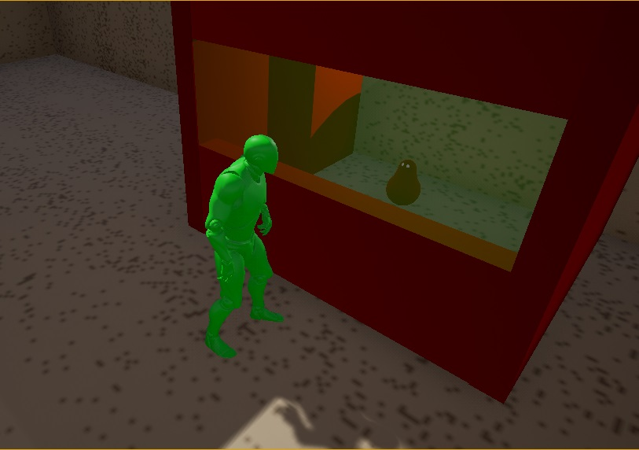
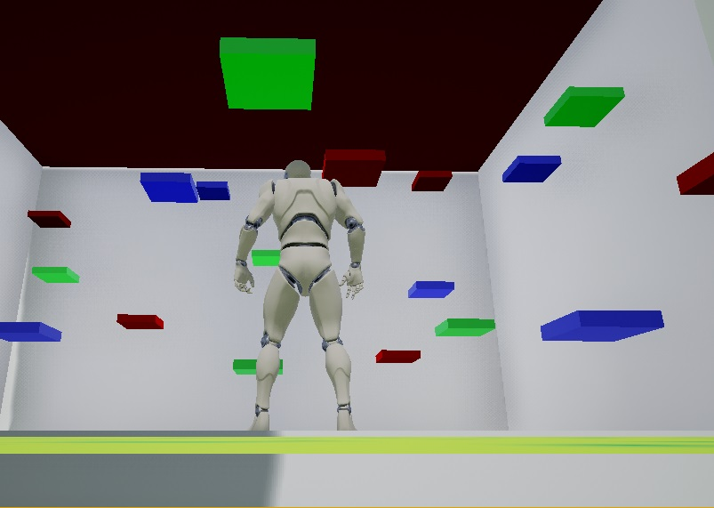
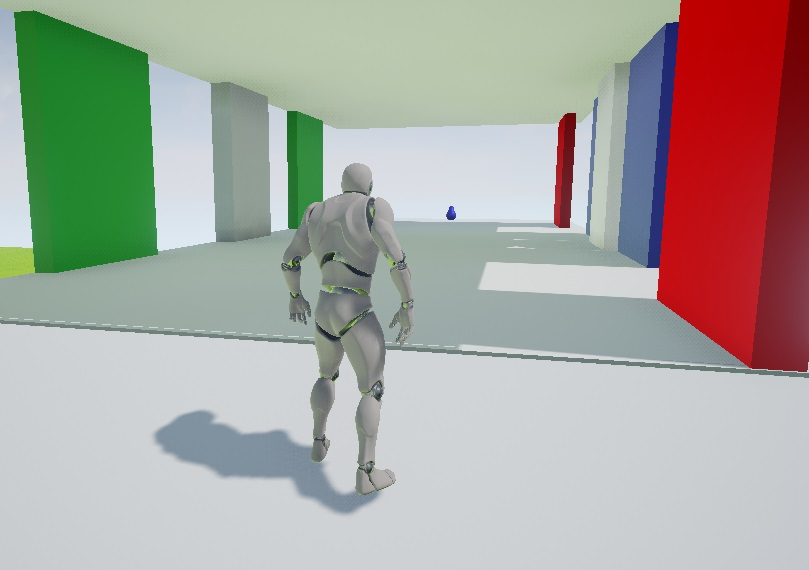
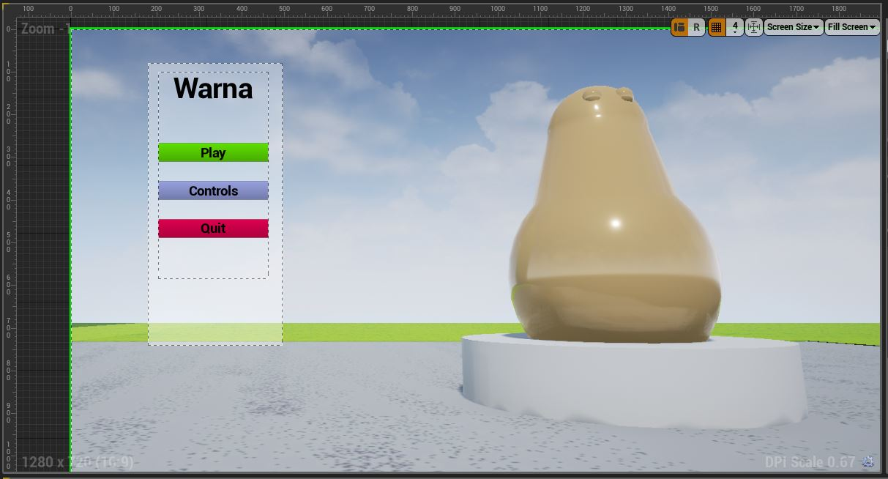
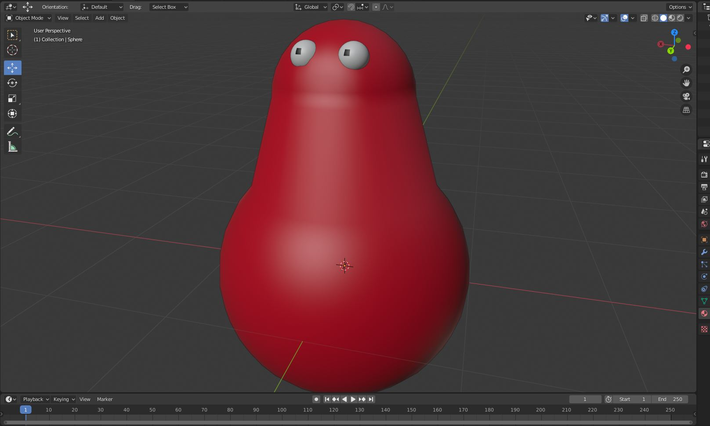

I started by brainstorming several different directions I could take the 'community' theme:
A game where the player has to rescue people and reunite them.
A game where you have to settle arguments to repair a community.
A game where you have to place as many people into a room as possible, while managing opposing traits.
I ultimately chose the first option, as I felt confident in my ability to create all the necessary assets and code within the timeframe.
The experiance
I wanted to provide an experiance similar to that provided by The Witness, using simple puzzles to teach the player the skills they needed instead of a traditional tutorial. The starting room, and each of the three initial puzzles, requires players to learn one of the skills necessary for the finale, while still providing players a sense of accomplishment and progression.



The UI
Creating the menus, I wanted to stay consistant with the strong red/green/blue themes central to the gameplay, while still providing menus that matched player usability expectations such as using the red button to exit, and the green button to start.

Asset Creation
I used Blender to create the Buddies in need of rescue, wanting to create something simple, soft, and friendly. Most of the shapes and materials were created using Unreal's in-engine shapes and material editing, to help me save some time to work on other aspects of the game. Everything that reacted to the player changing color needed to do so clearly, making it obvious to the player what effect their color change had on the affected object.

Looking ahead
I'm happy with what I was able to produce, given the constraints placed on me by both the jam organizers and myself. Given more time, I would love to revisit the 'hallway' puzzle to increase its complexity and make the moving walls' collision feel cleaner. After that, I would expand the game to incorporate more than one single 'finale' puzzle